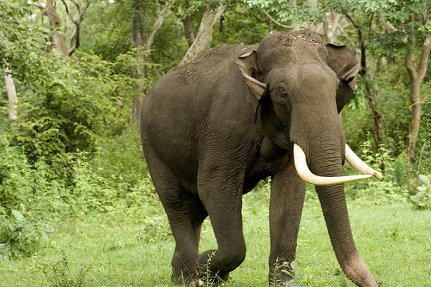
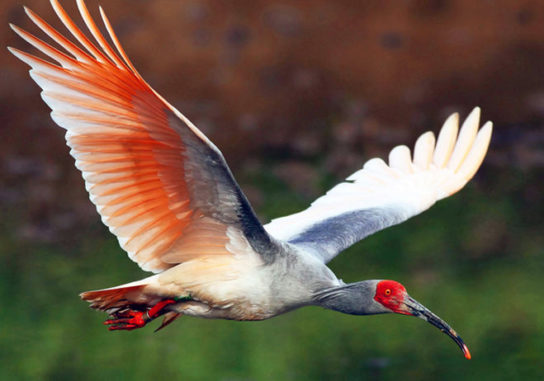
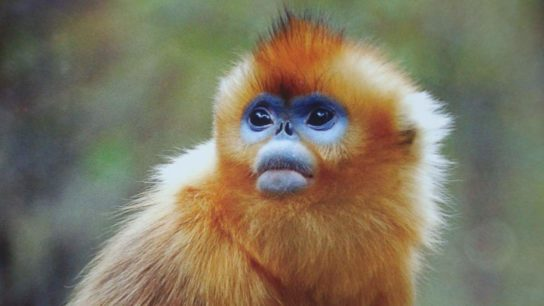

Индийский слон

Представители этого вида слонов отличаются большими размерами. Масса и размеры самцов больше, чем у самок. В среднем, вес слона колеблется от 2 до 5,5 тонн, в зависимости от пола и возраста. Обитает в лесной местности с густым кустарником.
Азиатский ибис

Эта птица является родственником аиста и в большом количестве обитала на азиатской части планеты. В результате охоты и развития промышленности, азиатские ибисы практически истреблены. На данный момент, это крайне редка птица, занесенная в Международную красную книгу.
Рокселланов ринопитек

Эти обезьянки имеют очень необычную, колоритную окраску. В цвете шерсти преобладают оранжевые тона, а лицо имеет синеватый оттенок. Рокселланов ринопитек обитает в горах, на высоте до 3 километров. Совершают кочевки в поисках мест с более низкой температурой воздуха